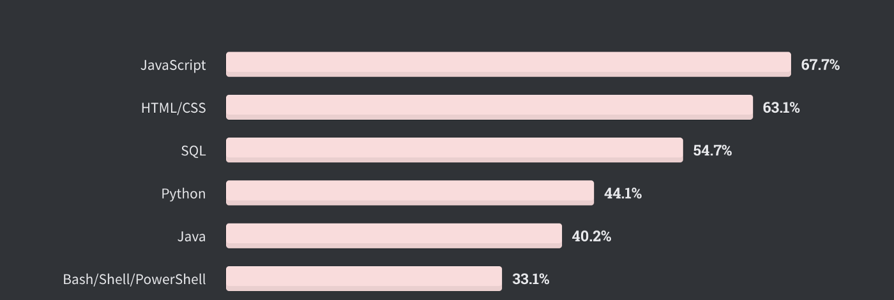
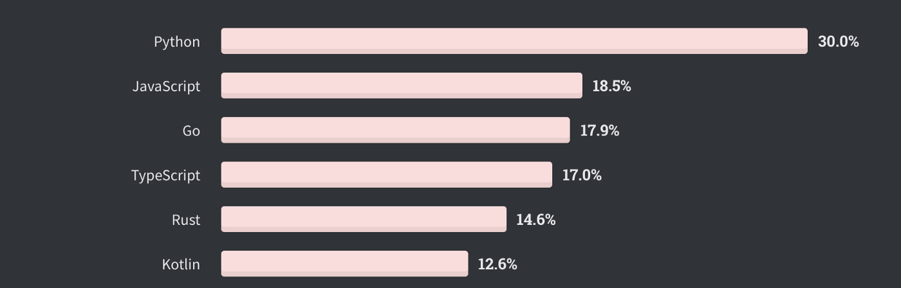

Why Python is popular ?
As all of you know Python is one of the most popular programming language today.
According to Stack overflow developer survey 2020 python is 4th in the list most popular programming language with 44.1% vote after Javascript, HTML/CSS and SQL.
Also it has top spot in the list of most wanted programming languages with 30%(almost twice number of votes comparing to Javascript, which is second in the list) of the survey participants interested to learn Python more than any other Programming language.
Why python very popular or why majority of the developers want to work in Python 🤔
1. Easy to Learn and Use
According to python docs
Python is an easy to learn, powerful programming language. It has efficient high-level data structures and a simple but effective approach to object-oriented programming. Python’s elegant syntax and dynamic typing, together with its interpreted nature, make it an ideal language for scripting and rapid application development in many areas on most platforms.
Python is unlike many other programming language very easy to use, its almost like plain english. So its very easy to learn comparing to other programming languages like Java, which is very complex and have very steep learning curve. This is the most important reason I think, especially for a person who is new to programming and doesn’t have a good knowledge in programming language syntax.
2. Machine Learning
ML, AI and Cloud computing are some of the hot trends in computer science industry. Python is very popular here along with R. This is the reason why many companies started to use Python. There are many popular and awesome libraries in python which are useful in ML projects. Numpy is one among that.
3. Healthy, Active and Supportive Community
Another reason for the popularity of Python is its community. Since it has a legacy of more than 30 years it is wonder python has this community strength. Communities are very improtant for a programming language in this open source world. Having many guys around the world who can help you when you are stuck somewhere is an awesome feeling.
Real python is one among that which is a group of pythonistas all around the world with members ranging from Python beginers to some Python Gurus. And they are very active with a slack group and weekly meetups.
4. Libraries and Framewors
Python is very rich in libraries and framework whether it is web development or machine learning.
Django is a very good example for that. Django is a very popular and high-level Python Web framework. Since it comes with many important features like authentication, security etc internally it takes care of much of the hassle of Web development. Also very active community and well defined documentation is another peculiarly of Django.
5. Use in academics
Python has become very important in academics. All the universities which used C in their syllabus now changed to python. This is mainly because it can be used with many advanced technologies like Artificial Intelligence, Machine Mearning, Big Data, and it enourages students to learn Python. Also while working on a project most of the students need help when they stuck at somewhere, having an active community is an added advantage here.
Conclusion
Python is one of the popular and fast growing programming language today, many factors like simple syntax, active and supportive community, large number of really good frameworks, relevance in AI/ML are helping Python really fast. For these reason many software engineers around the world have choose or wanted to choose Python as a career choice.